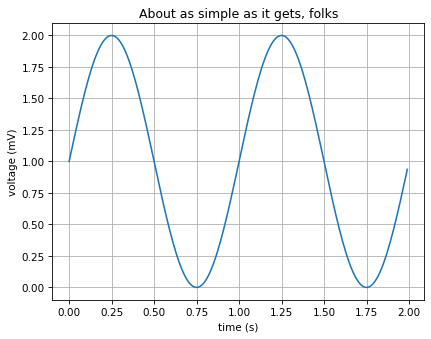

Simple Plot¶
Python source code: [download source: simple_plot.py]
import matplotlib
import matplotlib.pyplot as plt
import numpy as np
# Data for plotting
t = np.arange(0.0, 2.0, 0.01)
s = 1 + np.sin(2 * np.pi * t)
fig, ax = plt.subplots()
ax.plot(t, s)
ax.set(xlabel='time (s)', ylabel='voltage (mV)',
title='About as simple as it gets, folks')
ax.grid()